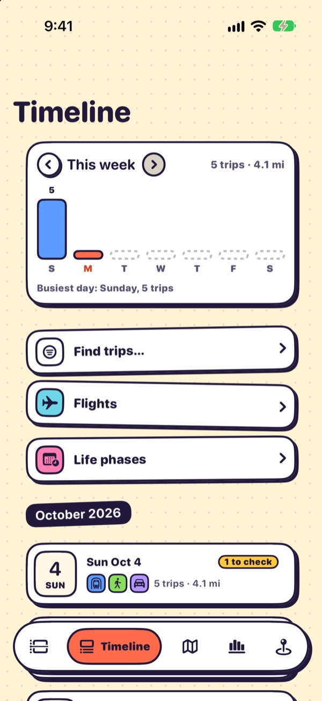
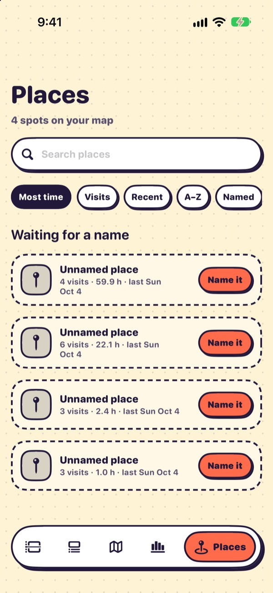
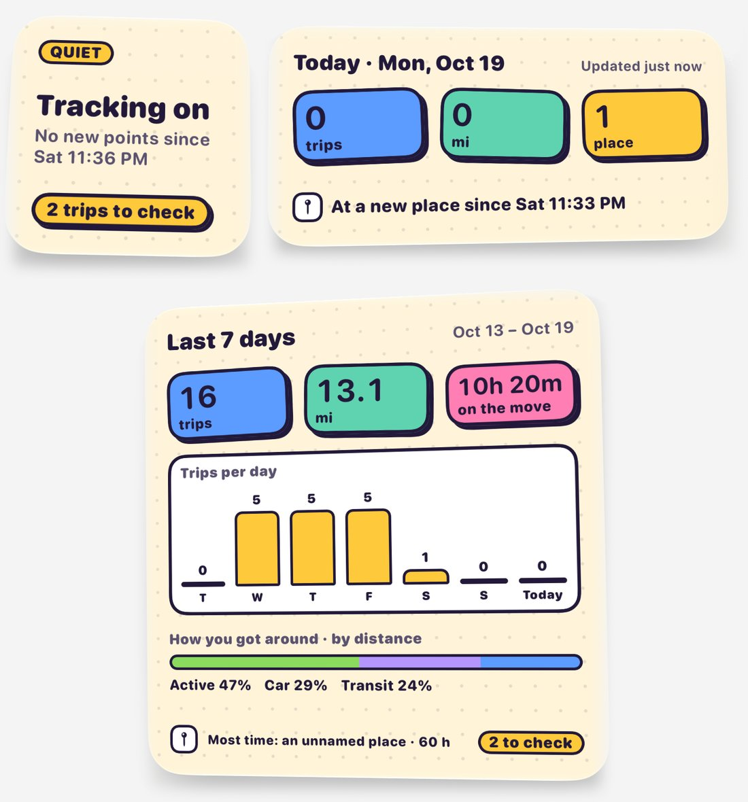

TripLibre for iOS · by HHT Diary
A travel diary that writes itself.
TripLibre records where you go, rebuilds each day into visits, trips and travel modes, and keeps all of it on your iPhone. Think of it as a household travel survey that fills itself in, with a sample size of one.
- iOS 17+
- Free · Apache 2.0
- No account
- No server
- CSV · JSON · GeoJSON · SQLite


What it does today
From raw GPS to a diary you can trust.
01 · collect
Background recording
GPS runs only while you are moving. When you stop, the app switches to a geofence to save battery. Motion data sharpens mode detection.
02 · reconstruct
Visits, trips and modes
A deterministic engine turns raw fixes into stays, trips, mode segments and named places. The same input always gives the same diary.
03 · correct
One-tap fixes
Change a mode, rename a place, set a purpose, split or merge. Corrections are locked, logged and survive rebuilds.
04 · stamp
Self-reported stops
One tap records a stop too short for GPS to notice, like dropping someone off.
05 · analyse
Stats and widgets
Mode share, radius of gyration, tours, flights, period comparisons, and Home Screen widgets for today and the last 7 days.
06 · export
Survey-shaped export
Trips follow household-travel-survey conventions and export to CSV, JSON, GeoJSON and SQLite, with a Python loader.
Screens
Playful on the surface, rigorous underneath.
The app uses a bright "sticker" style and a map-pin mascot that sums up your day. Every screen is annotated in the UI guide.





Privacy
Your location history stays on your phone.
No account, no server, no analytics SDK, no sync. The database is one SQLite file in the app's sandbox. Data leaves the phone only when you export it.
Keeping data on the device removes the server, not every risk. A trace of where someone sleeps and works can re-identify them, the phone can be backed up to iCloud, and an export can be forwarded. The Privacy page lists the few network requests the app makes, what an export contains, and how to erase everything.
Accuracy has been measured on a small personal sample, not benchmarked across many people. See Validation and Research uses & limitations before using TripLibre data in a study.
Install
Get TripLibre on your iPhone.
TripLibre is not on the App Store yet. Today you build it from source on a Mac and install it on your own phone; the installation guide walks through every step.
Available
Build from source
Needs a Mac with Xcode, XcodeGen, a free Apple ID and an iPhone on iOS 17 or later. With a free Apple ID the install lasts 7 days and you renew it with one command; your data is kept between installs.
$ git clone https://github.com/zyang91/TripLibre.git $ cd TripLibre && make phone
In progress
App Store
An App Store release of the same personal diary is in progress, so installing will no longer need Xcode. The target is around November 2026, it depends on App Review, and it may move. It adds no research features.
No phone? make sim builds the app and launches it in the iOS Simulator with three synthetic days of
demo data. See Try it in the Simulator.